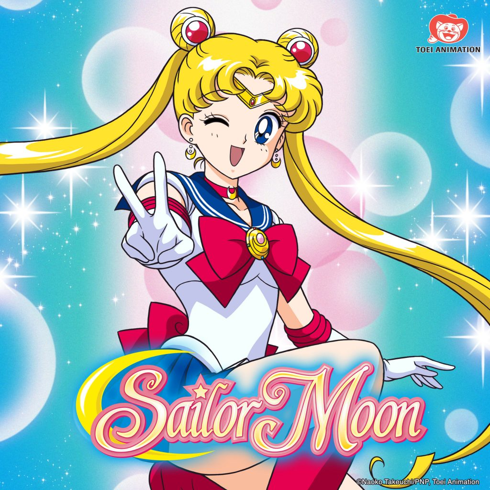

Sailor Moon
Argumento
El argumento expuesto a continuación pertenece exclusivamente al manga, por ser la historia original, debido a su notable diferencia con el argumento expuesto en el anime.
Usagi Tsukino es una adolescente japonesa ordinaria, perezosa, algo torpe y llorona cuya vida cambia para siempre cuando ayuda y se encuentra una gata negra con una marca de Luna creciente en la frente, de nombre "Luna", quien le revela que está destinada a convertirse en una Sailor Senshi con poderes mágicos que debe enfrentarse a las fuerzas del mal. Con ayuda de un amuleto mágico, Usagi es capaz de transformarse en "Sailor Moon", una hermosa y generosa guerrera que defiende a los indefensos en el nombre de la luna.
Personajes
-
Usagi Tsukino
Es la principal protagonista y heroína de la serie; una estudiante que obtiene la habilidad de transformarse en la famosa justiciera protectora del amor y la justicia, Sailor Moon. Si bien en un principio Usagi no era más que una adolescente perezosa, ingenua y un tanto llorona; con el tiempo se vuelve más valiente, decidida y eficaz. Además de que su naturaleza gentil junto a su gran corazón la convierte en la portadora y guardiana del poderoso Cristal de Plata.
-
Ami Mizuno
Es “El ratón de biblioteca” en la escuela de Usagi. Se trata de una chica muy inteligente, con un coeficiente intelectual de 300, capaz de convertirse en Sailor Mercury; la justiciera del conocimiento, capaz de controlar el agua en sus estados líquido, sólido, gaseoso, e incluso niebla. Se caracteriza por su timidez y su pasión por el estudio, así como también una necesidad de proteger a los demás. Ella anhela seguir los mismos pasos que su madre en el estudio de la Medicina; es la más analítica del grupo.
-
Rei Hino
Es una decidida Miko que tiene la capacidad de convertirse en Sailor Mars, la guerrera de las llamas y la pasión. Rei tiene habilidades de Onmyōji, entre las que se cuenta la percepción extrasensorial. Es capaz de detectar fuerzas malignas a su alrededor, debilitarlas o expulsarlas; además de poder manipular el fuego como una Sailor Senshi. Mientras en el manga Rei es una chica seria y tranquila, su versión animada es más temperamental, impulsiva y orgullosa; que riñe con frecuencia con Usagi, si bien en el fondo la quiere y admira mucho.
-
Makoto Kino
Es una chica de estatura y fortaleza física superior a la media; que puede convertirse en Sailor Jupiter, guerrera que controla los relámpagos y los árboles. Al principio, Makoto posee gustos como la cocina y la Jardinería. Sus padres murieron en un accidente aéreo, tras lo cual Makoto tuvo que aprender a vivir y cuidarse sola.Es una chica sentimental, pero fuerte, que tiene la costumbre de ver en cada muchacho que conoce un parecido con su antiguo senpai.
-
Minako Aino
Es una enamoradiza, vivaz y alegre chica que empieza su carrera de justiciera primero con el nombre de Sailor V y luego como Sailor Venus, guerrera que tiene poderes afines al amor y al romance. Muy parecida a Usagi en apariencia (rubia, delgada) y en personalidad (holgazana y amante de los videojuegos); ella es parte del club escolar de voleibol y aspira a convertirse en una cantante ícono de la cultura pop. Minako es, a su vez, la líder de las justicieras que protegen a Sailor Moon y la primera de las protagonistas en convertirse en una Sailor Senshi, gracias a su fiel compañero y amigo, Artemis.
-
Mamoru Chiba
Es un muchacho que se convierte en el héroe Tuxedo Mask, un enmascarado vestido de Frac que con frecuencia aparece para asistir a Sailor Moon durante las batallas. Posee una gran habilidad para usar su sombrero de copa, bastón y demás accesorios como armas de combate, además de una capacidad para la premonición y la retrocognición, especialmente a través de los sueños. Con estas habilidades él ayuda a las Sailor Senshi a largo de toda la serie. Si bien Mamoru es un par de años mayor que Usagi, termina iniciando una relación romántica con ella.
-
Chibi Usa
Es una niña de ojos rojizos y cabello rosado que al principio va al cuarto grado de primaria, si bien es demasiado baja de estatura para su edad. Apareció como una pequeña y misteriosa visitante que empezó a vivir en la casa de Usagi, haciéndose pasar por una prima suya; hasta que se descubre que en realidad, procede del futuro en el siglo 30. Puede convertirse en una Sailor Senshi, Sailor Chibi Moon porque es la futura hija de Usagi y Mamoru. Su relación con Usagi a lo largo de la serie se basa en el cariño de madre-hija que se tienen y una gran rivalidad por las atenciones de Mamoru.
-
Setsuna Meiō
Es un personaje que primero es presentada en su identidad como Sailor Senshi, Sailor Pluto. Sailor Pluto es una guerrera que posee poderes afines al Inframundo y la dimensión del Tiempo. Amiga de Chibiusa, se dedica a cuidar de la "Puerta Espacio-Temporal", una misteriosa estructura que permite viajar al pasado y al futuro. Su misión consiste en no permitir que nadie pase a través de esta puerta para viajar en el tiempo sin permiso, o causar cambios imprevistos en la Historia. Ella parece ser una mujer más madura, severa y solitaria que las demás protagonistas.
-
Haruka Tenn'ōh
Es una estudiante de preparatoria, es una prodigiosa corredora de carreras profesional. Tiene muchas admiradoras, lo cual se debe en parte a que viste, luce y habla como si fuera un hombre; a diferencia de Makoto, Haruka es la típica "chica butch". Ella puede transformarse en Sailor Uranus, guerrera con el poder del aire, que posee grandes afinidades con el cielo102 y la dimensión del Espacio, y puede correr "tan velozmente como el viento". Aunque se encuentra en una relación de pareja con Michiru, le gusta coquetear con Usagi y algunas de las otras Sailor Senshi.
-
Michiru Kaiō
Es una estudiante de secundaria, es una muy delicada y talentosa violinista que puede convertirse en Sailor Neptune, guerrera que controla las aguas profundas y posee una gran afinidad con los océanos, a diferencia de Sailor Mercury. Al igual que Rei, posee la habilidad de percepción extrasensorial, que finalmente empieza a "canalizar" a través de su talismán, el Espejo de Aguas Profundas. Antes de conocer a Usagi y las demás Michiru trabajaba por su cuenta, al igual que Minako y Setsuna, hasta que conoció a Haruka; quien se convirtió en su principal compañera e incluso su pareja romántica.
-
Hotaru Tomoe
Es una jovencita lógica y formal, quien se hace gran amiga de Chibiusa. Al principio, sufre extraños ataques que se creen a causa de una rara enfermedad. Su vida es muy solitaria; ya que su madre está muerta, no tiene hermanos, y su padre es un gran científico que está siempre ocupado en extraños experimentos. Pronto se descubre que ella puede transformarse en Sailor Saturn, última guerrera del equipo, que posee afinidades con el Silencio y el Fin del Mundo, además de la capacidad de destruir un planeta por completo. Finalmente, Hotaru es adoptada por Michiru, Haruka y Setsuna.